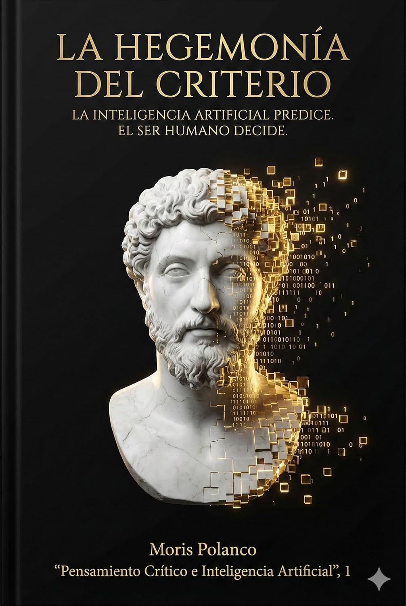

El Centauro
Superando el dualismo. Una unidad operativa donde la bestia computacional (fuerza bruta de datos) se subordina a la cabeza humana (dirección ética y estratégica).
- Intuición informada
- Fricción cognitiva deliberada
"La inteligencia artificial predice.
El ser humano decide."
Un manifiesto filosófico para líderes que se niegan a ser reemplazados. Descubre cómo recuperar la soberanía humana en la era del algoritmo de la mano de Giambattista Vico.

La tesis
Vivimos la culminación del sueño cartesiano: mentes lógicas capaces de procesar la sintaxis del mundo a velocidad luz. Pero nos falta humanidad. "La hegemonía del criterio" no es un manual técnico, es una defensa del Ingenium. Basándose en la filosofía de Giambattista Vico, Moris Polanco argumenta que mientras la máquina opera en el dominio del cálculo (Certum), el ser humano reina en el dominio del sentido (Verum).
La máquina estima precios; el humano valora significados. Recupera la soberanía de la decisión.
Un retorno a la sabiduría poética y al sentido común frente a la frialdad de la razón pura.
Uso de la IA no para vigilar al empleado, sino para auditar la salud ética de la institución.
Superando el dualismo. Una unidad operativa donde la bestia computacional (fuerza bruta de datos) se subordina a la cabeza humana (dirección ética y estratégica).
Gestión de la alucinación creativa. Protocolos para evitar el "eco artificial" y la adulación algorítmica. La verdad no se encuentra en el output, se verifica en el proceso.
Pasar de la ética como restricción a la ética como expansión. Utilizar la escala de la IA para ejercer la virtud (Pietas) de una manera humanamente imposible.
Automatizar lo ordinario para liberar lo extraordinario. El fin último de la IA es devolvernos el tiempo para la política, la retórica y la empatía.
No permitas que la barbarie de la reflexión técnica sustituya tu sabiduría. Únete a la resistencia humanista.
Durante más de veinticinco años he dedicado mi vida a la enseñanza de la filosofía y el pensamiento crítico. En este cuarto de siglo, he visto pasar modas pedagógicas y revoluciones tecnológicas, pero ninguna me provocó el vértigo intelectual que sentí al enfrentarme por primera vez a la inteligencia artificial generativa.
Debo confesar, con la humildad del académico que sigue aprendiendo, que al principio caí bajo su hechizo. Me dejé fascinar por su capacidad casi mágica de tejer historias y construir lenguaje con una coherencia gramatical impecable. Sin embargo, esa fascinación inicial pronto dio paso a una inquietud profunda, una sospecha antigua que sacudió los cimientos de mi disciplina.
Me di cuenta de que estábamos presenciando la culminación del sueño cartesiano: la creación de una mente puramente lógica, clara y distinta, capaz de procesar la sintaxis del mundo a una velocidad sobrehumana. Pero al mirar ese abismo de perfección algorítmica, comprendí que lo que nos faltaba no era más cálculo, sino más humanidad.
Fue entonces cuando regresé a Giambattista Vico.
Hace tres siglos, este filósofo napolitano lanzó una advertencia profética contra la obsesión de su época —y de la nuestra— por reducir la vida a matemáticas. Vico entendió que la inteligencia humana no es un algoritmo aislado; es un producto histórico, social y poético. A esa facultad superior la llamó ingenium: la capacidad de conectar lo dispar, de entender la metáfora y de actuar con prudencia en un mundo incierto.
La tesis central de este libro es que la inteligencia artificial, por formidable que sea, opera en el dominio del cálculo, mientras que el ser humano reina en el dominio del criterio. Y el criterio no es una operación lógica; es un acto vital.
Mientras que la máquina ejecuta operaciones sobre una base de datos inerte, el ser humano ejerce el juicio desde la urgencia de la vida. A la máquina no se le va la vida en sus cálculos; no conoce el miedo a la extinción ni el anhelo de trascendencia. Nosotros, en cambio, operamos bajo el imperativo de la supervivencia, y es esa fragilidad la que nos permite valorar, no solo estimar.
La IA puede estimar con precisión el valor comercial de un objeto basándose en millones de datos, pero es ontológicamente incapaz de comprender por qué una joya sin valor monetario es incalculable porque perteneció a una abuela. Esos valores invisibles para el algoritmo son la sustancia misma de nuestra realidad.
Escribo este libro con un objetivo claro: invitar a líderes, administradores y emprendedores a recuperar la soberanía intelectual. La inteligencia artificial es una herramienta formidable que debemos aprovechar para ahorrarnos tiempo y esfuerzo, pero jamás debemos permitir que la "barbarie de la reflexión" técnica sustituya a la sabiduría humana.
Este volumen no es un esfuerzo aislado; constituye el primer libro de una serie que me propongo escribir sobre pensamiento crítico e inteligencia artificial, aplicado a las diferentes disciplinas. Es el inicio de un itinerario para explorar cómo el criterio debe prevalecer sobre el cálculo en cada campo del saber humano.
El criterio debe dominar al cálculo, nunca al revés.
En las páginas siguientes, de la mano de Vico y de la teoría de gestión moderna, exploraremos cómo construir una "Hegemonía del Criterio". No se trata de rechazar la tecnología, sino de elevar nuestra humanidad para estar a la altura de ella. La tarea del líder hoy es cultivar ese criterio superior para que la tecnología sirva a la vida, y no la vida a la tecnología.
- Moris Polanco